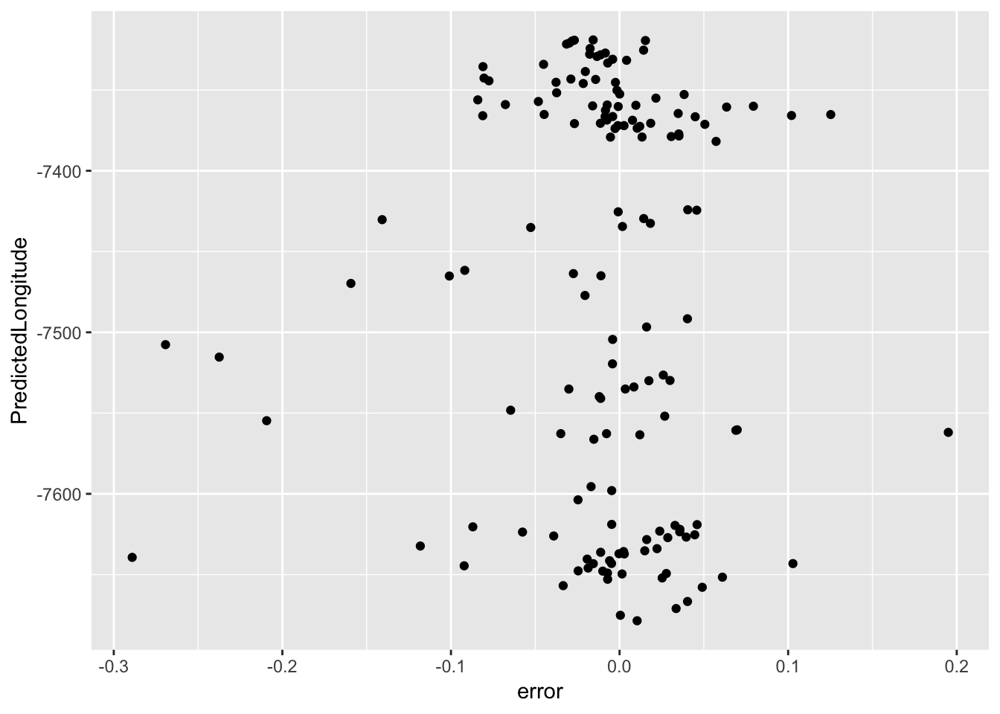
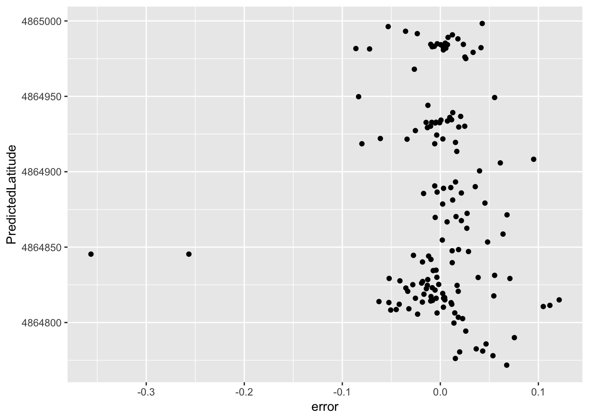

pacman::p_load(ggplot2, dplyr, party, caret, corrplot, reshape, rpart, rattle, psych, tidyr, stringr, randomForest, tictoc, plotly)
#Remove Scientific notations
options(scipen=999)
#Seed function
reset.seed <- function()
{
set.seed(1337)
}
#saveRDS(wifidataTrainNoCor, "wifidataTrainNoCor-8.rds")
setwd("~/Documents/@/UBIQUM/DATAML/ModuleIOT/wifi_github")
wifidataTrainNoCor <- readRDS("./RandomForest_500Random_Sample_Datasets/wifidataTrainNoCor-8.rds")
reset.seed()I wanted to have different random samples for each time I executed a model. I followed the next steps:
For Predicting Building:
For Predicting Floor, Longitude and Latitude:
######################################################################################BUILDINGID###################################################################################################
#Select variables only with WAPS + BUILDINGID
wifiWapsBuilding <- wifidataTrainNoCor %>% select(1:379,383)
#Sample WAPS + BUILDINGID
wifiTrainSampleBuilding <- wifiWapsBuilding[sample(1:nrow(wifiWapsBuilding), 500,
replace=FALSE),]
#Splitting
intrainWapsBuilding <- createDataPartition(y = wifiTrainSampleBuilding$BUILDINGID, p= 0.7, list = FALSE)
trainWapsBuilding <- wifiTrainSampleBuilding[intrainWapsBuilding, ]
testWapsBuilding <- wifiTrainSampleBuilding[-intrainWapsBuilding, ]############################################BUILDINGID######################################################################################################################
#random forest ~BUILDINGID @Caret
#plsFitWapsBuilding <- train(BUILDINGID~., data = trainWapsBuilding, method = "rf")
#Load model from Building
load("RandomForest_500Random_Sample_Models/WapsBuildingRF.rda")
plsFitWapsBuilding## Random Forest
##
## 351 samples
## 379 predictors
## 3 classes: '0', '1', '2'
##
## No pre-processing
## Resampling: Bootstrapped (25 reps)
## Summary of sample sizes: 351, 351, 351, 351, 351, 351, ...
## Resampling results across tuning parameters:
##
## mtry Accuracy Kappa
## 2 0.5888201 0.2422026
## 190 0.9775510 0.9643620
## 379 0.9700023 0.9525484
##
## Accuracy was used to select the optimal model using the largest value.
## The final value used for the model was mtry = 190. #mtry Accuracy Kappa
# 2 0.5888201 0.2422026
# 190 0.9775510 0.9643620 *I selected this mtry for the next models
# 379 0.9700023 0.9525484
#Predict the Test data
predrf_Building <- predict(plsFitWapsBuilding, newdata = testWapsBuilding)
#Post Resample Metrics
pred_metric_rf_Building <-
postResample(testWapsBuilding$BUILDINGID, predrf_Building)
#Metrics
pred_metric_rf_Building## Accuracy Kappa
## 0.9664430 0.9483141 #Accuracy Kappa
#0.9865772 0.9789370
#Create a new column with predictions
testWapsBuildingRF <- testWapsBuilding
testWapsBuildingRF$Predicted <- predrf_Building
confusionMatrix(data= testWapsBuildingRF$Predicted, reference =testWapsBuildingRF$BUILDINGID)## Confusion Matrix and Statistics
##
## Reference
## Prediction 0 1 2
## 0 43 0 0
## 1 4 36 1
## 2 0 0 65
##
## Overall Statistics
##
## Accuracy : 0.9664
## 95% CI : (0.9234, 0.989)
## No Information Rate : 0.443
## P-Value [Acc > NIR] : < 0.00000000000000022
##
## Kappa : 0.9483
##
## Mcnemar's Test P-Value : NA
##
## Statistics by Class:
##
## Class: 0 Class: 1 Class: 2
## Sensitivity 0.9149 1.0000 0.9848
## Specificity 1.0000 0.9558 1.0000
## Pos Pred Value 1.0000 0.8780 1.0000
## Neg Pred Value 0.9623 1.0000 0.9881
## Prevalence 0.3154 0.2416 0.4430
## Detection Rate 0.2886 0.2416 0.4362
## Detection Prevalence 0.2886 0.2752 0.4362
## Balanced Accuracy 0.9574 0.9779 0.9924#Save model into a CSV
#save(plsFitWapsBuilding, file = "WapsBuildingRF.rda")############################################FLOOR######################################################################################################################
#Load model from Building
load("RandomForest_500Random_Sample_Models/WapsBuildingRF.rda")
#Select variables only with WAPS + FLOOR
wifiWapsFloor <- wifidataTrainNoCor %>% select(1:379,382)
#Sample WAPS + FloorID
wifiTrainSampleFloor <- wifiWapsFloor[sample(1:nrow(wifiWapsFloor), 500,
replace=FALSE),]
#Splitting
intrainWapsFloor <- createDataPartition(y = wifiTrainSampleFloor$FLOOR, p= 0.7, list = FALSE)
trainWapsFloor <- wifiTrainSampleFloor[intrainWapsFloor, ]
testWapsFloor <- wifiTrainSampleFloor[-intrainWapsFloor, ]
#Predict the Building and put it in a new column in both, Train + Test set
#in train
predrf_Building_for_Floor <- predict(plsFitWapsBuilding, newdata = trainWapsFloor)
trainWapsFloor$BUILDINGID <- predrf_Building_for_Floor
#in test
predrf_Building_for_Floor <- predict(plsFitWapsBuilding, newdata = testWapsFloor)
testWapsFloor$BUILDINGID <- predrf_Building_for_Floor############################################FLOOR######################################################################################################################
#random forest ~FLOOR @Caret
#plsFitWapsFloor <- train(FLOOR~., data = trainWapsFloor, method = "rf")
load("RandomForest_500Random_Sample_Models/WapsFloorRF.rda")
plsFitWapsFloor## Random Forest
##
## 352 samples
## 380 predictors
## 5 classes: '0', '1', '2', '3', '4'
##
## No pre-processing
## Resampling: Bootstrapped (25 reps)
## Summary of sample sizes: 352, 352, 352, 352, 352, 352, ...
## Resampling results across tuning parameters:
##
## mtry Accuracy Kappa
## 2 0.3446047 0.1431072
## 191 0.7062291 0.6141903
## 381 0.6851700 0.5870581
##
## Accuracy was used to select the optimal model using the largest value.
## The final value used for the model was mtry = 191.#mtry Accuracy Kappa
# 2 0.3446047 0.1431072
# 191 0.7062291 0.6141903 *I selected this mtry for the next models
# 381 0.6851700 0.5870581
#Predict the Test data
predrf_Floor <- predict(plsFitWapsFloor, newdata = testWapsFloor)
#Post Resample Metrics
pred_metric_rf_Floor <-
postResample(testWapsFloor$FLOOR, predrf_Floor)
#Metrics
pred_metric_rf_Floor## Accuracy Kappa
## 0.7567568 0.6779886# Accuracy Kappa
#0.8040541 0.7419432
#Create a new column with predictions
testWapsFloorRF <- testWapsFloor
testWapsFloorRF$PredictedFloor <- predrf_Floor
confusionMatrix(data= testWapsFloorRF$PredictedFloor, reference = testWapsFloorRF$FLOOR)## Confusion Matrix and Statistics
##
## Reference
## Prediction 0 1 2 3 4
## 0 23 3 0 0 0
## 1 7 30 1 1 0
## 2 0 6 30 10 0
## 3 0 1 4 28 3
## 4 0 0 0 0 1
##
## Overall Statistics
##
## Accuracy : 0.7568
## 95% CI : (0.6795, 0.8235)
## No Information Rate : 0.2703
## P-Value [Acc > NIR] : < 0.00000000000000022
##
## Kappa : 0.678
##
## Mcnemar's Test P-Value : NA
##
## Statistics by Class:
##
## Class: 0 Class: 1 Class: 2 Class: 3 Class: 4
## Sensitivity 0.7667 0.7500 0.8571 0.7179 0.250000
## Specificity 0.9746 0.9167 0.8584 0.9266 1.000000
## Pos Pred Value 0.8846 0.7692 0.6522 0.7778 1.000000
## Neg Pred Value 0.9426 0.9083 0.9510 0.9018 0.979592
## Prevalence 0.2027 0.2703 0.2365 0.2635 0.027027
## Detection Rate 0.1554 0.2027 0.2027 0.1892 0.006757
## Detection Prevalence 0.1757 0.2635 0.3108 0.2432 0.006757
## Balanced Accuracy 0.8706 0.8333 0.8578 0.8223 0.625000#Save model into a CSV
#save(plsFitWapsFloor, file = "WapsFloorRF.rda")############################################LONGITUDE######################################################################################################################
reset.seed()
#Load model from Building
load("RandomForest_500Random_Sample_Models/WapsBuildingRF.rda") #plsFitWapsBuilding
#Load model from Floor
load("RandomForest_500Random_Sample_Models/WapsFloorRF.rda") #plsFitWapsFloor
#Select variables only with WAPS + LONGITUDE
wifiWapsLongitude <- wifidataTrainNoCor %>% select(1:380)
#Sample WAPS + LONGITUDE
wifiTrainSampleLongitude <- wifiWapsLongitude[sample(1:nrow(wifiWapsLongitude), 500,
replace=FALSE),]
#Splitting
intrainWapsLongitude <- createDataPartition(y = wifiTrainSampleLongitude$LONGITUDE, p= 0.7, list = FALSE)
trainWapsLongitude <- wifiTrainSampleLongitude[intrainWapsLongitude, ]
testWapsLongitude <- wifiTrainSampleLongitude[-intrainWapsLongitude, ]
#Predict the Building and put it in a new column in both, Train + Test set
#in train
predrf_Building_for_Longitude <- predict(plsFitWapsBuilding, newdata = trainWapsLongitude)
trainWapsLongitude$BUILDINGID <- predrf_Building_for_Longitude
#in test
predrf_Building_for_Longitude2 <- predict(plsFitWapsBuilding, newdata = testWapsLongitude)
testWapsLongitude$BUILDINGID <- predrf_Building_for_Longitude2
#Predict the Floor and put it in a new column
#in train
predrf_Floor_for_Longitude <- predict(plsFitWapsFloor, newdata = trainWapsLongitude)
trainWapsLongitude$FLOOR <- predrf_Floor_for_Longitude
#predrf_Floor_for_Longitude why they are the same?
#in test
predrf_Floor_for_Longitude2 <- predict(plsFitWapsFloor, newdata = testWapsLongitude)
testWapsLongitude$FLOOR<- predrf_Floor_for_Longitude2############################################LONGITUDE######################################################################################################################
#random forest ~LONGITUDE @Caret
#plsFitWapsLongitude <- train(LONGITUDE~., data = trainWapsLongitude, method = "rf")
load("RandomForest_500Random_Sample_Models/WapsLongitudeRF.rda")
plsFitWapsLongitude## Random Forest
##
## 352 samples
## 381 predictors
##
## No pre-processing
## Resampling: Bootstrapped (25 reps)
## Summary of sample sizes: 352, 352, 352, 352, 352, 352, ...
## Resampling results across tuning parameters:
##
## mtry RMSE Rsquared MAE
## 2 93.08891 0.8937296 85.28058
## 193 22.23506 0.9697075 13.53111
## 385 24.54994 0.9626794 14.52663
##
## RMSE was used to select the optimal model using the smallest value.
## The final value used for the model was mtry = 193.# mtry RMSE Rsquared MAE
# 2 93.08891 0.8937296 85.28058
# 193 22.23506 0.9697075 13.53111 *I selected this mtry for the next models
# 385 24.54994 0.9626794 14.52663
#Predict the Test data
predrf_Longitude <- predict(plsFitWapsLongitude, newdata = testWapsLongitude)
#Post Resample Metrics
pred_metric_rf_Longitude <-
postResample(testWapsLongitude$LONGITUDE, predrf_Longitude)
#Metrics
pred_metric_rf_Longitude## RMSE Rsquared MAE
## 23.6837254 0.9663791 14.5976072# RMSE Rsquared MAE
#23.6837254 0.9663791 14.5976072
#Create a new column with predictions
testWapsLongitudeRF <- testWapsLongitude
testWapsLongitudeRF$PredictedLongitude <- predrf_Longitude
#Save model into a CSV
#save(plsFitWapsLongitude, file = "WapsLongitudeRF.rda")#Create a distribution analysis here
testWapsLongitudeRF$error <- (testWapsLongitudeRF$PredictedLongitude - testWapsLongitudeRF$LONGITUDE)/(length(testWapsLongitudeRF))
#plot(predrf_Longitude)
ggplot(testWapsLongitudeRF, aes(error, PredictedLongitude)) + geom_point(aes()) 
############################################LATITUDE######################################################################################################################
reset.seed()
#Load model from Building
load("RandomForest_500Random_Sample_Models/WapsBuildingRF.rda") #plsFitWapsBuilding
#Load model from Floor
load("RandomForest_500Random_Sample_Models/WapsFloorRF.rda") #plsFitWapsFloor
#Load model from Longitude
load("RandomForest_500Random_Sample_Models/WapsLongitudeRF.rda") #plsFitWapsLongitude
#Select variables only with WAPS + LATITUDE
wifiWapsLatitude <- wifidataTrainNoCor %>% select(1:379, 381)
#Sample WAPS + LATITUDE
wifiTrainSampleLatitude <- wifiWapsLatitude[sample(1:nrow(wifiWapsLatitude), 500,
replace=FALSE),]
#Splitting
intrainWapsLatitude <- createDataPartition(y = wifiTrainSampleLatitude$LATITUDE, p= 0.7, list = FALSE)
trainWapsLatitude <- wifiTrainSampleLatitude[intrainWapsLatitude, ]
testWapsLatitude <- wifiTrainSampleLatitude[-intrainWapsLatitude, ]
#Predict the Building and put it in a new column in both, Train + Test set
#in train
predrf_Building_for_Latitude <- predict(plsFitWapsBuilding, newdata = trainWapsLatitude)
trainWapsLatitude$BUILDINGID <- predrf_Building_for_Latitude
#in test
predrf_Building_for_Latitude2 <- predict(plsFitWapsBuilding, newdata = testWapsLatitude)
testWapsLatitude$BUILDINGID <- predrf_Building_for_Latitude2
#Predict the Floor and put it in a new column
#in train
predrf_Floor_for_Latitude <- predict(plsFitWapsFloor, newdata = trainWapsLatitude)
trainWapsLatitude$FLOOR <- predrf_Floor_for_Latitude
#predrf_Floor_for_Latitude why they are the same?
#in test
predrf_Floor_for_Latitude2 <- predict(plsFitWapsFloor, newdata = testWapsLatitude)
testWapsLatitude$FLOOR<- predrf_Floor_for_Latitude2
#Predict the Longitude and put it in a new column
#in train
predrf_Longitude_for_Latitude <- predict(plsFitWapsLongitude, newdata = trainWapsLatitude)
trainWapsLatitude$LONGITUDE <- predrf_Longitude_for_Latitude
#predrf_Floor_for_Latitude why they are the same?
#in test
predrf_Longitude_for_Latitude2 <- predict(plsFitWapsLongitude, newdata = testWapsLatitude)
testWapsLatitude$LONGITUDE<- predrf_Longitude_for_Latitude2############################################LATITUDE######################################################################################################################
#random forest ~FLOOR @Caret
#plsFitWapsLatitude <- train(LATITUDE~., data = trainWapsLatitude, method = "rf")
load("RandomForest_500Random_Sample_Models/WapsLatitudeRF.rda") #plsFitWapsBuilding
plsFitWapsLatitude## Random Forest
##
## 352 samples
## 382 predictors
##
## No pre-processing
## Resampling: Bootstrapped (25 reps)
## Summary of sample sizes: 352, 352, 352, 352, 352, 352, ...
## Resampling results across tuning parameters:
##
## mtry RMSE Rsquared MAE
## 2 49.69596 0.853228 40.48128
## 194 16.29938 0.939995 11.50426
## 386 17.54124 0.929862 11.98166
##
## RMSE was used to select the optimal model using the smallest value.
## The final value used for the model was mtry = 194.# mtry RMSE Rsquared MAE
# 2 49.69596 0.853228 40.48128
# 194 16.29938 0.939995 11.50426 *I selected this mtry for the next models
# 386 17.54124 0.929862 11.98166
#Predict the Test data
predrf_Latitude <- predict(plsFitWapsLatitude, newdata = testWapsLatitude)
#Post Resample Metrics
pred_metric_rf_Latitude <-
postResample(testWapsLatitude$LATITUDE, predrf_Latitude)
#Metrics
pred_metric_rf_Latitude## RMSE Rsquared MAE
## 19.3676079 0.9261508 11.2653012# RMSE Rsquared MAE
#13.9265993 0.9580016 9.9114249
#Create a new column with predictions
testWapsLatitudeRF <- testWapsLatitude
testWapsLatitudeRF$PredictedLatitude <- predrf_Latitude#Create a distribution analysis here
testWapsLatitudeRF$error <- (testWapsLatitudeRF$PredictedLatitude - testWapsLatitudeRF$LATITUDE)/(length(testWapsLatitudeRF))
#plot(predrf_Latitude)
ggplot(testWapsLatitudeRF, aes(error, PredictedLatitude)) + geom_point(aes()) 
#Save model into a CSV
#save(plsFitWapsLatitude, file = "WapsLatitudeRF.rda")A work by Belén Agurto
b@virgen.io